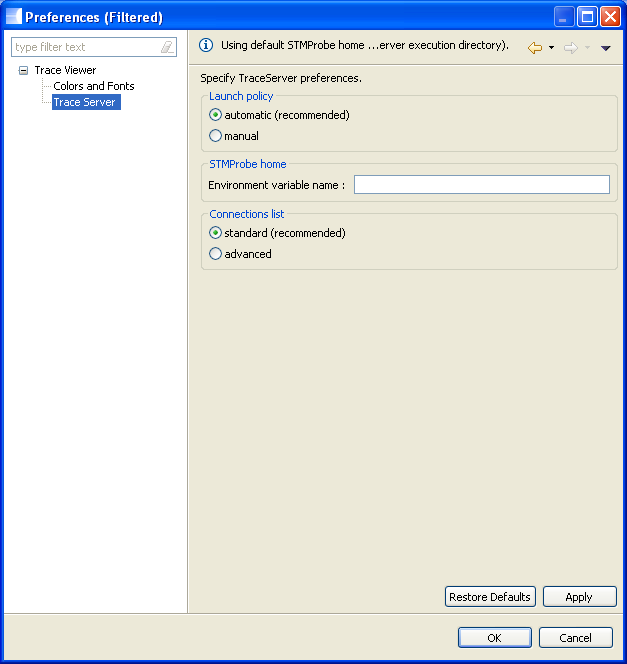
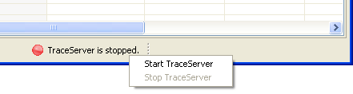

Trace Viewer Workbench
Documentation > References > TraceServer Mode
|
|
Trace Viewer Workbench Documentation > References > TraceServer Mode |
Description
The TraceServer tool allows capturing traces issued via a STM hardware block from instrumented applications running on HED and ST-Ericsson platforms. Once captured, the display or the record of these trace data is done by decoder. In the current version (decoder 2.0.0 including TraceServer 1.0-build15), it supports 6 modes:
COMBIPROBE: connect to a Combiprobe box through a named pipe (same as using the named pipe option).
OTHER: connect to a "Other" box. No more options required.
STMPROBE: connect to a STMProbe box. The location of the FPGA driver directory is requested.
[Must be activated in the preferences] FILE_COMBIPROBE: use a Combiprobe generated file as input (same as using the trace file option).
[Must be activated in the preferences] FILE_OTHER: use a "Other" box generated file as input (same as using the trace file option).
[Must be activated in the preferences] FILE_TS_STP: debug purpose only, use a STP file dumped by the TraceServer as input (cannot be achieved using the trace file option).

Usage
The use of the TraceServer from Trace Viewer is transparent for the user. Indeed, by default the TraceServer is started and stopped automatically. It is started the first time that the user selects the TraceServer input mode and is stopped when Trace Viewer GUI is closed.
However it can be started and stopped from the menu ("Tools > Start TraceServer" amd "Tools > Stop TraceServer"):

The status of the TraceServer process managed by Trace Viewer is indicated in the bottom status line of the window.
Important notice: Trace Viewer won't manage a TraceServer process that has been launch outside of Trace Viewer workbench. If you launched manually an external TraceServer (not using the Trace Viewer buttons), you should disable the automatic launch of the TraceServer inside the Trace Viewer workbench (see the Configuration section).
Configuration
The TraceServer preferences page is accessible via the menu "Tools > Preferences...". Then in the preferences window, click on "Trace Viewer > TraceServer" ("Trace Viewer" node might need to be expanded in order to see "TraceServer").

Launch policy
automatic: TraceServer process is automatically launched and managed from the Trace Viewer workbench when you are in TraceServer mode.
manual : TraceServer process is not managed by Trace Viewer workbench. If you want to use the TraceServer mode, you have to either launch the TraceServer from the Trace Viewer workbench (its status will then be managed inside the workbench) or to launch an external TraceServer process (in that case Trace Viewer won't know its status).
STMProbe home
Environment variable name: in this field you can optionally fill an envronment variable name that contains a path to a directory containing the STMProbe needed files fx2.hx and stmprobe.rbf (does not include the dynamic library that must be in the path). If incorrectly set, you will get errors from the TraceServer when connecting to the STMProbe which should look like: "Cannot find fx2.hex file".
Connections list
standard (recommended): standard connections list: COMBIPROBE, OTHER, STMPROBE.
advanced : advanced connections list, same as standard plus the following: FILE_COMBIPROBE, FILE_OTHER, FILE_TS_STP.
Tips
Status Line
You can start/stop the TraceServer using the context menu (right-click or left-click) of the status line.

|
|
© STMicroelectronics and others 2010, 2011. 2012. All rights reserved. |